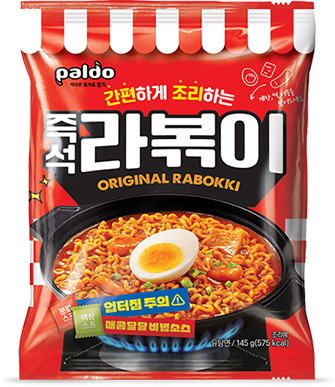
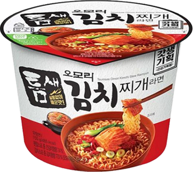

최애 라면

불닭볶음면
무조건 큰컵, 봉지는 별로다.
물 반만 부어서 소스까지 넣고 전자레인지 총 4분(2분씩 끊어서)해주면 매우 맛있다..
삶은 계란이랑 먹으면 천국에 갈 수 있다.
#야식각

오징어짬뽕
개인적으로 봉지가 매우 맛있다.
엄마가 하신 걸 뺏어 먹으면 더 맛있다.
오짬을 모르고 산 지난 날은 사실 거짓일지도..(라고 과장해도 괜찮을까요?..)
#엄마미안

진라면 순한맛
논란이 될까요..?!
대파와 청양고추/고추가루를 넣어 먹으면 매우 맛있다.
진라면 매운맛과는 다른 매운 맛을 느낄 수 있다.

라볶이
사실 계란이 너무 좋아서 많이 먹어요!
하라는 시간 만큼하면 국물이 너무 많아서
저는 엄청 오래 끓이거나, 당면을 더 넣어요//(^^)//

오모리 김치찌개라면
이것도 봉지보단, 컵라면이 굿.
그냥 오모리도, 틈새 오모리도 다 맛있다.